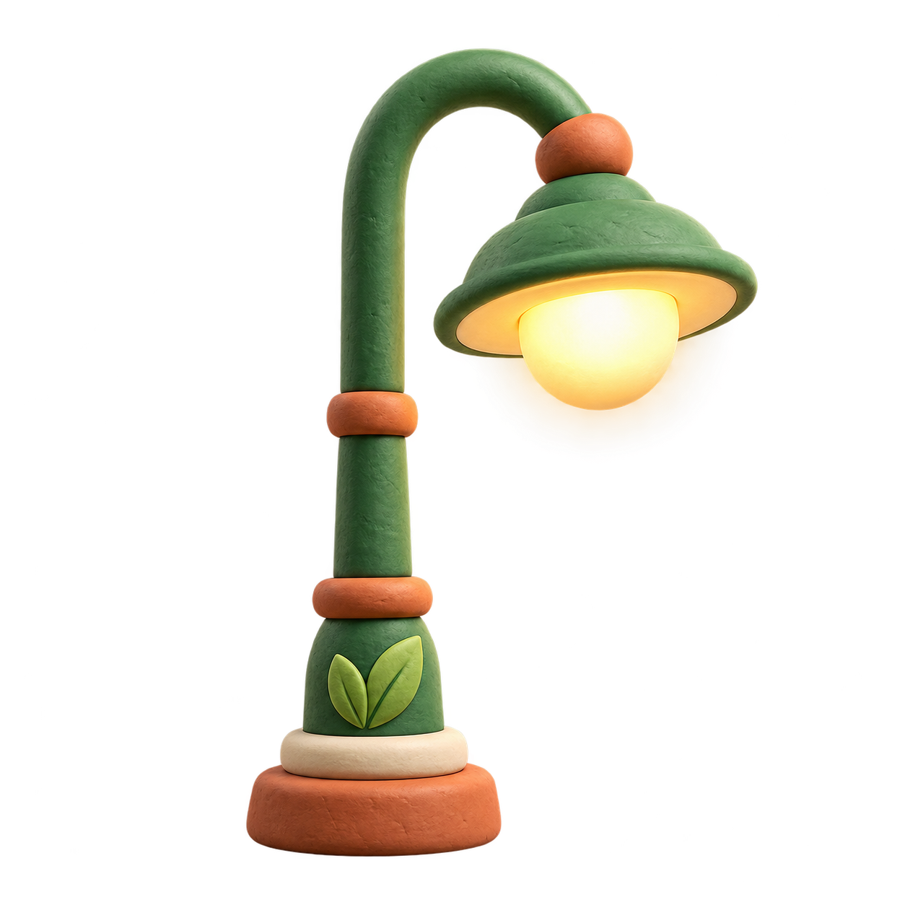
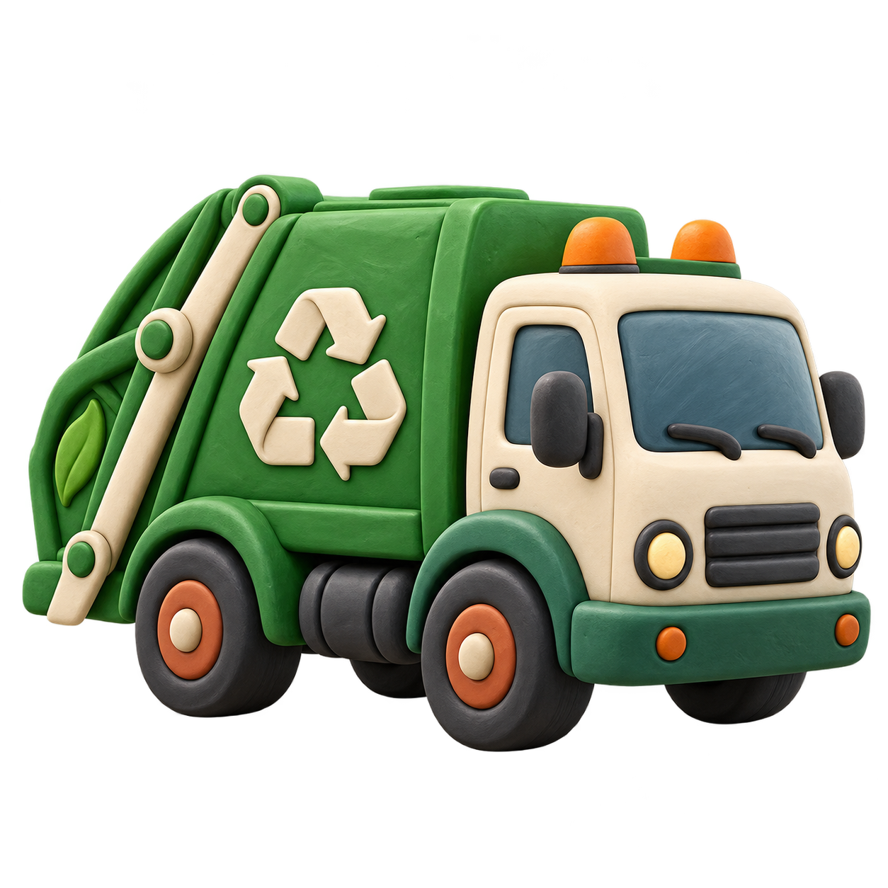
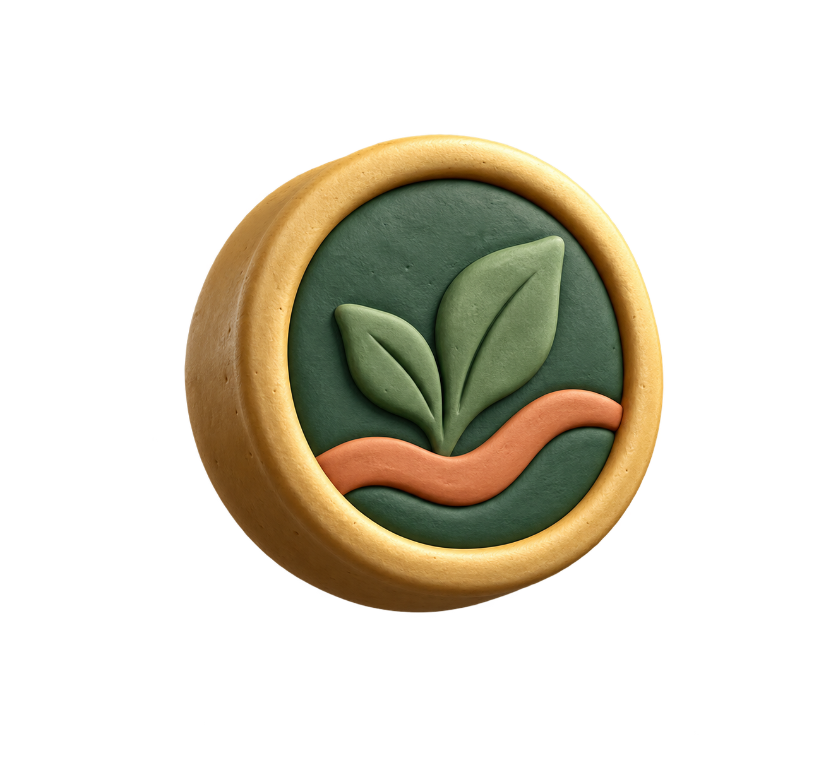
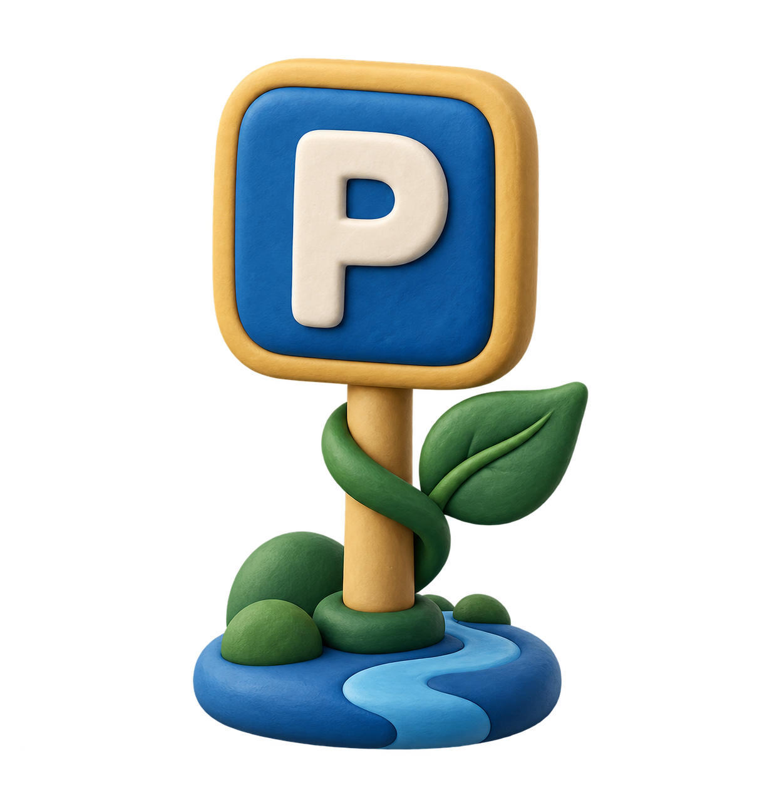
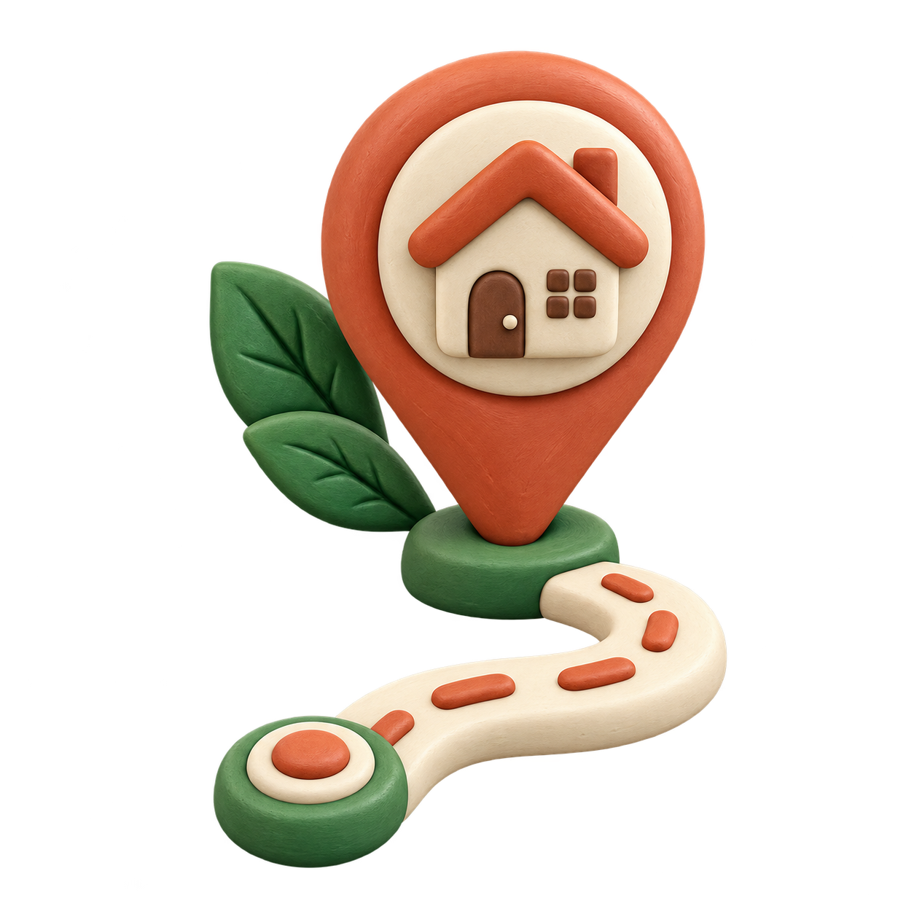

Una ciudad más cercana
Mi
Yantzaza
La ciudad que te escucha, te informa y te acompaña.
Una plataforma para acercar los servicios municipales a cada barrio, cada familia y cada visitante.
ServiciosParticipaciónTurismo
Una plataforma para acercar los servicios municipales a cada barrio, cada familia y cada visitante.

Consulta servicios, novedades y propuestas para vivir mejor nuestra ciudad.

Envía un reporte con categoría, descripción, evidencia fotográfica y ubicación exacta.
 Reportar incidenciaBaches
Reportar incidenciaBaches
Alumbrado
ResiduosConsulta tus valores, elige una forma de pago y recibe tu comprobante en tu correo.

Pagos municipales
Consulta el recorrido, el destino y el tiempo estimado de llegada en cada sector.


Explora balnearios, cascadas, cultura shuar y emprendimientos locales desde una guía pensada para nuestra ciudad.